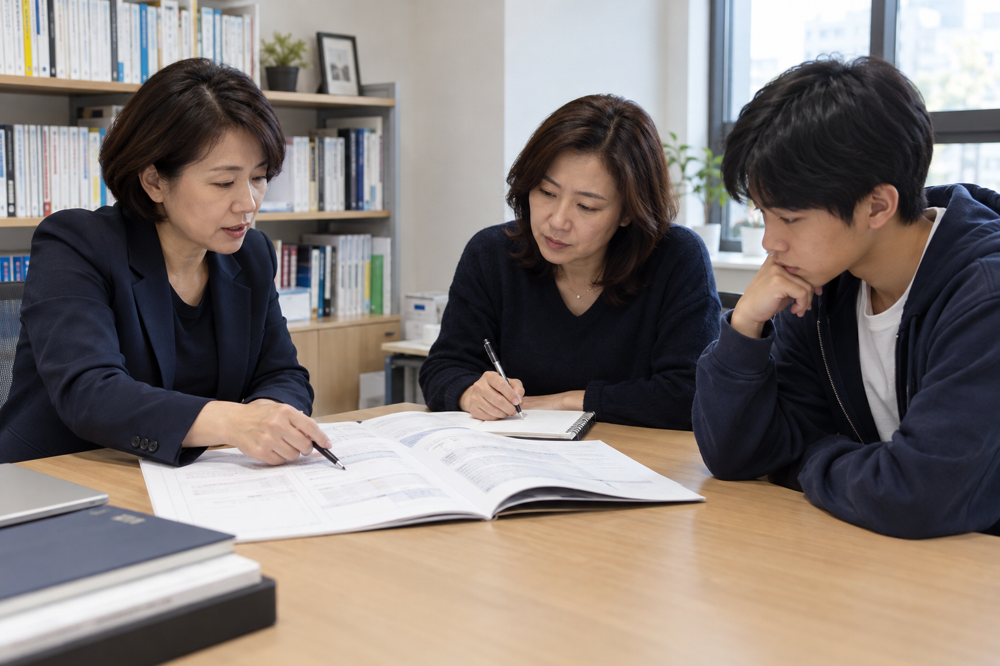

탐구 주제와 고민 확인
관심 전공과 교과, 실제 활동을 살피고 AI를 활용해 탐구 질문과 수행 가능한 범위를 구체화합니다.
분석 리포트를 읽기 어렵거나 준비 방향을 정하기 어려울 때, 필요한 시점에 별도로 신청합니다.

관심 전공과 교과, 실제 활동을 살피고 AI를 활용해 탐구 질문과 수행 가능한 범위를 구체화합니다.
AI로 탐구 방향과 조사·비교 항목을 확장하고, 답변의 근거와 자료를 검토합니다. 보유한 분석 리포트의 해석도 함께 살펴봅니다.
실제로 수행한 활동의 동기·과정·배움을 정리하고 다음 탐구와 면접 준비로 연결합니다. 학생부 대필이나 허위 활동을 만들지 않습니다.
1회 60분 · 100,000원
이용 안내 확인하기 ↗